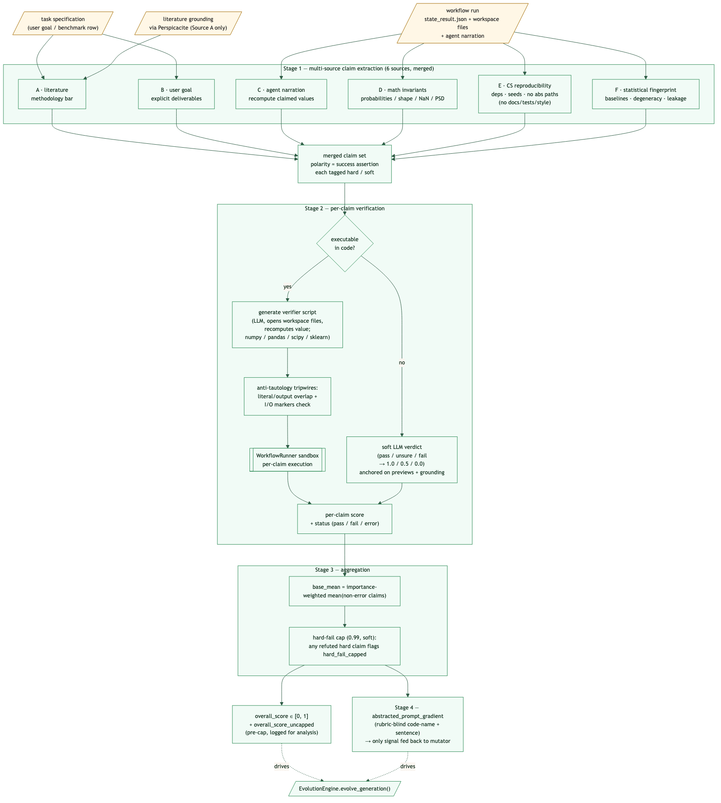

Contributing to Mimosa-AI¶
Technical contribution guide for Mimosa V2 (post
mimosa_v2branch merge).
Table of Contents¶
- Project Philosophy
- Architecture Overview
- Directory Structure
- Core Components
- Execution Flow
- Testing & Evaluation
- Contributing Guidelines
Project Philosophy¶
Vision¶
Mimosa-AI is an autonomous AI-scientist framework that synthesizes task-specific multi-agent workflows and refines them through execution feedback. It targets reproducible scientific research and provides academics with an open, auditable alternative to closed corporate systems.
Core Principles¶
1. Polymorphic Multi-Agent Architecture¶
Workflows are synthesized on-demand for each task as Python programs that wire LLM agents, MCP tools, and control flow together. There is no fixed pipeline — the meta-orchestrator emits a new graph per task.
2. Code-space Neuroevolution¶
The framework evolves workflows as full Python source, not prompts or fixed templates. A single evolution loop is a depth-first recursion over generations seeded from a Quality-Diversity (QD) archive. See Evolution engine for the canonical mapping onto neuroevolution primitives (representation / selection / variation / evaluation).
3. Verifier-driven evaluation¶
The judge that produces the evolutionary pressure signal is a multi-source, per-claim verifier. It writes deterministic Python programs that recompute the agent's claims from the workspace across six vantages (literature, user goal, agent narration, math invariants, computational reproducibility, statistical fingerprint), and falls back to LLM verdicts only when no executable check is possible. The single output handed to the mutator is a short prompt gradient describing what to change next — it does not name the verified claims back, so the mutator cannot turn the rubric vocabulary into an over-fitting target.
Note — this verifier is not the ScienceAgentBench or PaperBench grader. Those benchmarks compare workflow outputs against author- provided ground-truth files; the verifier here drives workflow evolution. See ScienceAgentBench and PaperBench.
See Evaluation pipeline.
4. Tool Discovery & Integration¶
Uses MCP (Model Context Protocol) for tool auto-discovery on the local network and via Toolomics workspace exchange.
Architecture Overview¶
Mimosa follows a five-layer architecture: (0) optional planning, (1)
tool discovery via MCP/Perspicacite, (2) meta-orchestration (the
evolution engine), (3) agent execution in a Python sandbox, and (4)
judge / evaluation.

Source: diagrams/architecture_overall.mermaid.
- Layer
0plans and decomposes goals into tasks (skipped in--task/ benchmark mode). - Layer
1discovers MCP tools exposed via Toolomics and queries Perspicacite for literature grounding. - Layer
2synthesizes and iteratively refines task-specific workflows via theEvolutionEngine(QD selection over a session archive). - Layer
3executes those workflows in a sandboxed runner with SmolAgents. - Layer
4runs the multi-source per-claim verifier and reportsoverall_score,reward_uncapped, andabstracted_prompt_gradientback into the loop.
Directory Structure¶
mimosa-ai/
├── config.py # Configuration management
├── main.py # CLI entry point & mode dispatch
├── pyproject.toml # Project metadata + deps
├── cleanup.sh # Reset workflows + capsules
├── memory_explorer.py # Interactive trace replay
├── memory_timelapse.py # Memory growth visualisation
│
├── sources/
│ ├── core/
│ │ ├── evolution_engine.py # Top-level evolutionary loop (depth-first recursion)
│ │ ├── selection.py # SelectionPressure (greedy/tournament/novelty/QD)
│ │ ├── variation_engine.py # Mutation/crossover prompt assembly + annealing
│ │ ├── workflow_selection.py # Parent retrieval (archive draw / disk scan)
│ │ ├── failure_fingerprint.py # Verifier verdicts → QD behaviour descriptor (6-D, centered)
│ │ ├── code_features.py # Legacy structural descriptor (offline analysis only)
│ │ ├── lineage.py # parent → child sidecar records
│ │ ├── orchestrator.py # Grounding → factory → sandbox pipeline
│ │ ├── workflow_factory.py # Multi-agent workflow synthesis
│ │ ├── single_agent_factory.py # Single-agent baseline factory
│ │ ├── factory.py # Shared factory primitives
│ │ ├── workflow_runner.py # Sandboxed Python execution
│ │ ├── workflow_info.py # Workflow metadata reader
│ │ ├── tools_manager.py # MCP tool discovery
│ │ ├── llm_provider.py # Multi-provider LLM abstraction
│ │ ├── planner.py # Goal → Task decomposition (Layer 0)
│ │ ├── schema.py # IndividualRun, Plan, Task, SelectionLog
│ │ └── evaluators/
│ │ ├── evaluator.py # WorkflowEvaluator facade (routes to backends)
│ │ ├── verifier.py # Multi-source per-claim verifier (default)
│ │ ├── grounding.py # Perspicacite literature-grounding adapter
│ │ ├── generic.py # Legacy LLM judge (4-criterion)
│ │ ├── scenario.py # Rubric-based evaluation
│ │ ├── bs_detection.py # BullshitDetector penalty
│ │ └── base.py # Shared evaluator primitives
│ │
│ ├── evaluation/
│ │ ├── csv_mode.py # Concurrent batch eval on CSV datasets
│ │ ├── capsule_evaluator.py # ScienceAgentBench metrics (VER/SR/CBS)
│ │ ├── codebert_scorer.py # Semantic code similarity
│ │ ├── execution_sandbox.py # Safe code execution for benchmark eval
│ │ ├── scenario_loader.py # Load scenario rubrics
│ │ ├── science_agent_bench.py # ScienceAgentBench dataset integration
│ │ └── eval_workflow_generation.py # Workflow-generation-quality eval
│ │
│ ├── cli/
│ │ ├── onboard_cli.py # Interactive zero-arg onboarding flow
│ │ ├── evaluation_cli.py # Interactive ScienceAgentBench launcher
│ │ └── pretty_print.py # Coloured CLI primitives (print_phase, …)
│ │
│ ├── extensibility/
│ │ ├── human_mode.py # Manual no-LLM CLI mode
│ │ └── text_to_speech.py # TTS hook
│ │
│ ├── modules/ # Pre-fab code injected into workflows
│ │ ├── state_schema.py # Workflow state template
│ │ └── smolagent_factory.py # SmolAgent factory template
│ │
│ ├── prompts/
│ │ ├── workflow_v11.md # Current workflow generator prompt
│ │ ├── workflow_v10.md # (kept for diffing)
│ │ ├── workflow_v9.md # (legacy reference)
│ │ ├── workflow_v8.md # (legacy reference)
│ │ ├── planner_reproduction.md # Planner prompt — reproduction goal
│ │ ├── planner_paperbench_codedev.md # Planner prompt — code-dev paperbench
│ │ └── smolagent_sys_prompt.md # SmolAgent system prompt
│ │
│ ├── cache/
│ │ └── openrouter_pricing.json # Cached pricing for cost tracking
│ │
│ ├── security/
│ │ └── check_package.py # Pre-flight package vetting
│ │
│ ├── utils/
│ │ ├── pricing.py # LLM pricing (OpenRouter-aware)
│ │ ├── logging.py # Structured logging
│ │ ├── notify.py # Pushover notifications
│ │ ├── transfer_toolomics.py # Workspace ↔ Toolomics transfer
│ │ ├── workspace_management.py # Snapshot / restore best run
│ │ ├── perspicacite_client.py # Literature grounding HTTP client
│ │ ├── planner_visualization.py # Real-time plan visualisation
│ │ ├── evolution_tree.py # Lineage → tree PNG renderer
│ │ ├── visualization.py # Reward/assertion plots
│ │ ├── shared_visualization.py # Shared plot primitives
│ │ ├── email_reporter.py # Email run summaries
│ │ ├── openrouter_endpoints.py # OpenRouter endpoint catalogue
│ │ ├── precheck.py # Environment validation
│ │ ├── list_files.py # Workspace listing helper
│ │ ├── dataset.py # CSV / scenario helpers
│ │ └── mock_data.py # Test fixtures
│ │
│ ├── memory/ # LLM call cache + memory traces (runtime)
│ └── workflows/ # Generated workflow storage (runtime)
│ └── <uuid>/ # Per-execution folders
│ ├── workflow_genotype_<uuid>.py
│ ├── state_result.json
│ ├── evolution_prompt_<uuid>.md
│ ├── lineage_<uuid>.json
│ ├── reward_progress.png
│ └── memory/
│
├── runs_capsule/
│ └── <capsule_name>/ # Per-execution capsule
│ ├── workflow.py
│ ├── results/
│ ├── logs/
│ └── evaluation_results.json
│
├── datasets/
│ ├── ScienceAgentBench.csv # ScienceAgentBench tasks
│ ├── ScienceAgentBench/ # Per-task workspaces
│ ├── our_benchmark.csv # Custom benchmark
│ ├── paper_bench.csv # OpenAI PaperBench
│ ├── paper_bench_light.csv # Light variant
│ ├── papers_rejection_watch.csv # Rejected-paper tracking
│ ├── datascience_papers.csv # DS papers list
│ └── scenarios/ # Scenario rubrics
│
├── docs/
│ ├── DEVELOPER_GUIDE.md # This file
│ ├── QUICK_RESEARCH_GUIDE.md # Quick research workflow
│ ├── v2_evolution.md # Neuroevolution-lens view of the engine
│ ├── math_lens.md # Math-style analysis of representation/QD
│ ├── papers_bench_evaluation.md
│ ├── science_agent_bench_evaluation.md
│ ├── diagrams/ # .mermaid sources + .puml
│ └── images/ # Rendered .png diagrams
│
└── tests/
├── evaluator_test.py
├── scenario_rubric_test.py
├── judge_test.py
├── workflow_evaluator_test.py
├── tools_manager_test.py
├── pricing_test.py
├── memory_read.py
└── cosine_similarity.py
Core Components¶
1. EvolutionEngine — sources/core/evolution_engine.py¶
Top-level evolutionary loop.
Key collaborators (instantiated in __init__):
- WorkflowSelector — parent retrieval.
- WorkflowOrchestrator — grounding → factory → sandbox.
- VariationEngine — mutation / crossover prompt assembly.
- WorkflowEvaluator — multi-source per-claim verifier (default).
- SelectionPressure — QD archive (population_size=50, k=15,
novelty_weight=0.25).
Each recursive step:
1. resets the workspace to the initial state,
2. orchestrates a workflow run (LLM → sandbox),
3. snapshots the workspace,
4. evaluates → overall_score / reward_uncapped,
5. calls validate_survivor() and admits to the archive if non-dominated
on (reward_uncapped, novelty),
6. selects the next parent(s) and chooses mutation vs crossover,
7. recurses.
Termination: overall_score >= learned_score_threshold (default 0.9) in
--learn mode, or max_depth reached
(max_learning_evolve_iterations, default 20; single-shot uses
max_depth=1).
2. SelectionPressure — sources/core/selection.py¶
Four strategies: greedy, tournament, novelty, qd (default). In
QD mode it maintains a session archive of up to population_size
members, weighted by qd_score = (1-w)·quality_norm + w·novelty_norm
(w = novelty_weight = 0.25). Quality is sourced from reward_uncapped
so the hard-fail cap (_HARD_FAIL_CAP, currently 0.99) doesn't
flatten rank ordering. Admission is
gated by the validity check (improvement over baseline or
qd_score > admit_threshold); when capacity is hit, the lowest-
qd_score member is evicted. Parent draw applies an inverse-child-count
penalty ÷(1 + n_children_already) and a hard
MAX_CHILDREN_PER_PARENT = 2 cap to spread offspring.
3. VariationEngine — sources/core/variation_engine.py¶
Prompt assembly for mutation and crossover. Mutation boldness is a
continuous function of two evidence signals — an
iters_since_improvement plateau counter and the Rechenberg ⅕
success rate of recent offspring — not a fixed phase schedule.
_iters_since_improvement()— length of the trailing run of scored offspring that did not strictly beat best-so-far (failures and unscored entries skipped). Normalised asplateau = min(1, iters / _PLATEAU_PATIENCE)with_PLATEAU_PATIENCE = 6._compute_success_rate(window=5)— fraction of the last 5 scored offspring that strictly beat the running best at production time. The Rechenberg ⅕ success rule threshold is0.20._get_prompt_step_size(parent_score)— combines the two:- cold start (fewer than two comparable scored offspring) —
effective = 0.3 · plateau(capped ramp), success_rate < 0.20—effective = 0.5 · deficit + 0.5 · plateauwithdeficit = (0.20 − success_rate) / 0.20(escalate),success_rate ≥ 0.20—effective = plateau · (1 − progress)withprogress = min(1, (success_rate − 0.20) / (0.80 − 0.20))(damp boldness in proportion to real progress),- near-finish floor: when
parent_score > 0.95, multiply by(1 − 0.5 · (parent_score − 0.95) / 0.05)so a 0.96 parent isn't gambled away one generation before early-stop, - RE-SPECIATION gate: unless
iters_since_improvement ≥ 8andsuccess_rate ∈ {None, 0.0},effectiveis clamped to_RESPECIATION_CLAMP = 0.89, just below the EXPLORATION/ RE-SPECIATION boundary at0.90. Then it grows the agent budget from the previous generation's count towardmax_possible_agents = 7proportionally toeffective, and samples the actual agent count with a Beta-Binomial biased upward byeffective.
- cold start (fewer than two comparable scored offspring) —
| Effective boldness | Mutation scope (advisory) |
|---|---|
| < 0.35 | EXPLOITATION — point mutation: minor phrasing / prompt-adjective tweaks |
| < 0.50 | ALIGNMENT — interface optimization: refine handoff prompts, IO contracts |
| < 0.65 | ADAPTATION — component overhaul: rewrite lagging agent prompts, swap tools |
| < 0.90 | EXPLORATION — macro structural mutation: add/merge agents, change routing |
| ≥ 0.90 | RE-SPECIATION — clean-slate redesign of the multi-agent architecture |
Scope is an advisory line injected into the mutation prompt; the LLM may still pick any topology. The hard control is the agent-count budget carried in the same block.
4. WorkflowSelector — sources/core/workflow_selection.py¶
Two-mode parent retrieval:
- Steady state: when
selection_pressure._archiveis populated, draws parents from the live session archive via QD-roulette. - Cold start: empty archive → similarity-filtered disk scan
(
cosine ≥ 0.8on MiniLM embeddings oforiginal_task,score ≥ 0.1) routed through the sameselect_parents()weighting.
5. WorkflowOrchestrator — sources/core/orchestrator.py¶
End-to-end workflow execution per generation:
- Grounding: queries Perspicacite for scientific literature context and prepends it to craft instructions.
- Generation: calls
WorkflowFactory(multi-agent) orSingleAgentFactory(--single_agent). - Dependency install + sandbox run: via
WorkflowRunnerwith the pinnedrunner_requirementslist fromconfig.py.
Returns (execution_output, uuid, workflow_genotype_code, executed) —
executed=False is the structural failure signal that drives
re-attempts.
6. LLMProvider — sources/core/llm_provider.py¶
Unified interface (via LiteLLM) over Anthropic Claude, OpenAI,
DeepSeek, Hugging Face, OpenRouter (with per-model provider routing),
and local MLX. Features:
- prompt-cache compatible request caching,
- retry/backoff,
- token counting + cost tracking,
- reasoning-effort support (Claude / GPT-5 minimal|low|medium|high).
7. ToolManager — sources/core/tools_manager.py¶
MCP server auto-discovery on the configured discovery_addresses port
range. Generates the tool-binding code injected into each workflow
genotype.
8. Evaluation backends — sources/core/evaluators/¶
| Backend | File | Use |
|---|---|---|
VerifierEvaluator |
verifier.py |
Default: multi-source per-claim verifier |
GenericEvaluator |
generic.py |
Legacy 4-criterion LLM judge |
ScenarioEvaluator |
scenario.py |
Rubric / assertion-based scoring |
Perspicacite grounding |
grounding.py |
Adapter used by verifier |
BullshitDetector |
bs_detection.py |
Numerical-fraud penalty |
The facade is WorkflowEvaluator (evaluator.py); the evolution engine
calls it with evaluator_type="verifier".
9. Benchmark evaluation — sources/evaluation/¶
csv_mode.py— concurrent batch runner over a CSV dataset (controlled byconfig.max_concurrent_eval_tasksandconfig.task_start_delay).capsule_evaluator.py— computes ScienceAgentBench's VER (Valid Execution Rate), SR (Success Rate), and CBS (CodeBERT Score).science_agent_bench.py— dataset adapter.eval_workflow_generation.py— workflow-generation-quality eval mode.
Execution Flow¶
Mode 1: Task mode (--task)¶
main.py --task "<task>" [--learn] [--single_agent]
↓
EvolutionEngine.start_workflow_evolution(goal)
├─ reset session archive
├─ rehydrate parent if --template_uuid (else None)
├─ first run: seed prompt OR template mutation
└─ evolve_generation() ← depth-first recursion
├─ orchestrate_workflow()
│ ├─ Perspicacite grounding
│ ├─ workflow_factory.craft_workflow()
│ └─ workflow_runner.execute() (sandbox)
├─ WorkflowEvaluator.evaluate(evaluator_type="verifier")
├─ SelectionPressure.validate_survivor() → archive admit?
├─ record_lineage()
├─ select next parent (archive QD-roulette)
├─ choose crossover (default crossover_rate=0.1, once initial_population met) or mutation
└─ recurse → stop on threshold OR max_depth
↓
WorkspaceManager.restore_best(best_uuid)
Mode 2: Goal mode (--goal)¶
main.py --goal "Reproduce paper X"
↓
Planner.start_planner(goal)
├─ generate multi-step plan
├─ human approval prompt
└─ for each step:
└─ start_workflow_evolution(step_task)
↓
LocalTransfer.transfer_workspace_files_to_capsule()
Mode 3: Benchmark batch (--science_agent_bench)¶
main.py --science_agent_bench --csv_runs_limit N --config my_config.json [--learn] [--single_agent]
↓
CsvEvaluationMode(max_concurrent_tasks=config.max_concurrent_eval_tasks)
↓
parallel start_workflow_evolution() per row, with task_start_delay between launches
↓
capsule_evaluator → ScienceAgentBench metrics (VER / SR / CBS)
Mode 4: Onboarding / Evaluation CLI (zero-args)¶
main.py # interactive setup wizard (OnboardCLI)
main.py --evaluation_cli # guided model/workspace/mode picker (EvaluationCLI)
Evaluation & the multi-source per-claim verifier¶

Source diagram: docs/diagrams/verifiers_judge.mermaid.
For each generation:
- Multi-source claim extraction: six independent prompts emit
success-polarity claims from different vantage points —
Aliterature (Perspicacité),Buser goal,Cagent narration (anti-hallucination),Dmath invariants,Enon-negotiable computational reproducibility (deps manifest covers used imports, no absolute paths, seeds on stochastic ops; explicitly forbids README / docs / tests / style / type-hint claims),Fstatistical fingerprint (baseline, degeneracy, leakage). Claims are taggedhardorsoft; bare file-existence is neverhard. - Per-claim verification: each claim is classified as executable or
soft. Executable claims get an LLM-written verifier script that opens
workspace files and recomputes the asserted value; anti-tautology
tripwires (literal/output overlap ≥ 80 chars, I/O markers presence)
reject scripts that parse the agent's answer back to itself. The
verifier runner has
numpy,pandas,scipy, andscikit-learnpre-installed (lazy one-shot install per process). Soft claims get apass/unsure/failLLM verdict against workspace previews + literature grounding (mapped to1.0 / 0.5 / 0.0). - Independent cheat detector: present in the codebase but currently
disabled pending a rewrite. The aggregation path still has a slot
for
cheat_penalty. Behavioral anti-cheat pressure today comes from Source C's recompute-from-disk verifiers, the inverted-score "Used fallback" claim type, and the anti-tautology tripwires. - Aggregation:
where
overall = clamp(base_mean + info_bonus, 0, 1) if any hard claim refuted: overall = min(overall, 0.99) # _HARD_FAIL_CAP (soft, for now) overall = max(0, overall - cheat_penalty) # cheat_penalty = 0.0 todayinfo_bonus(n_hard_pass) = 0.05 · (1 - exp(-n_hard_pass / 8))(saturating reward for thoroughness). - Prompt gradient — plain-language single-sentence diagnosis
prefixed with a short code name (e.g.
FALLBACK_ECFP_CLASSIFIER). It is the only verifier signal the mutator sees, and recent history is included so recurring failure modes reuse the same code names across generations. The gradient deliberately does not name the verified claims, scores, or which of the six sources raised them — so the mutator can correct the workflow without being handed a rubric to over-fit against.
Detail: Evaluation pipeline.
Testing & Evaluation¶
Running tests¶
# All tests
python -m pytest tests/
# Specific test
python -m pytest tests/evaluator_test.py
# Verbose + coverage
python -m pytest tests/ -v --cov=sources
Running evaluations¶
# Papers dataset (custom CSV)
python main.py --papers datasets/our_benchmark.csv --csv_runs_limit 10 --config my_config.json
# ScienceAgentBench (full sweep)
uv run main.py --science_agent_bench --csv_runs_limit 102 --config my_config.json
# ScienceAgentBench with iterative learning
uv run main.py --science_agent_bench --csv_runs_limit 7 --config my_config.json --learn
# Single-agent baseline
uv run main.py --science_agent_bench --csv_runs_limit 7 --config my_config.json --single_agent
Inspecting a workflow run¶
# Generated workflow code (genotype)
cat sources/workflows/<uuid>/workflow_genotype_<uuid>.py
# Execution state & per-claim scores
cat sources/workflows/<uuid>/state_result.json
# Variation prompt that produced this run
cat sources/workflows/<uuid>/evolution_prompt_<uuid>.md
# Lineage record (parents + operator)
cat sources/workflows/<uuid>/lineage_<uuid>.json
# Memory traces
ls sources/workflows/<uuid>/memory/
# Interactive replay
python memory_explorer.py <uuid>
Pushover notifications (optional)¶
- Create a Pushover account at pushover.net.
- Export
PUSHOVER_TOKENandPUSHOVER_USER. - Receive per-iteration completion and best-uuid notifications.
Contributing Guidelines¶
Before submitting a PR¶
- ✅
pytest tests/ - ✅ Follow existing style; see Evolution engine for conventions on new evolution-layer components.
- ✅ Add docstrings on public functions.
- ✅ Update the relevant doc page(s) under
docs/. If you change architecture, also update the.mermaidsource underdocs/diagrams/and regenerate the.pngunderdocs/images/.
PR description should include¶
- Problem — what does this solve?
- Solution — how does it solve it?
- Testing — how was it tested? (Pytest output, benchmark numbers.)
- Backwards compatibility — any breaking changes?
Re-rendering diagrams¶
cd docs
npx -y -p @mermaid-js/mermaid-cli mmdc \
-i diagrams/<name>.mermaid -o images/<name>.png \
-t neutral -b white -w 1800
Questions & Support¶
Open an Issue for any question or support request.